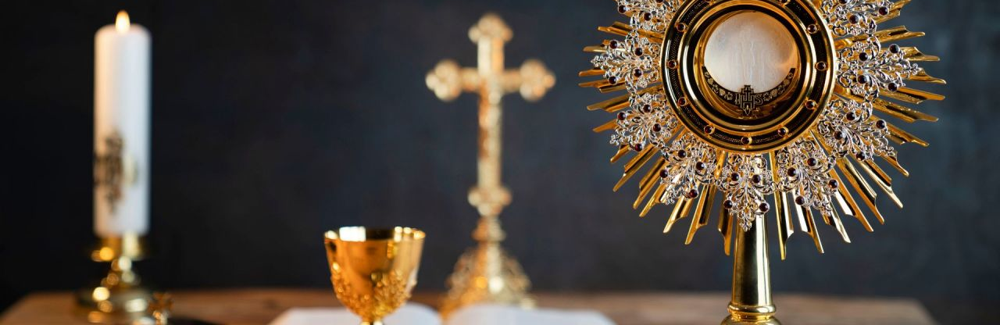

Uroczystość Najświętszego Ciała i Krwi Chrystusa (łac. Sollemnitas Sanctissimi Corporis et Sanguinis Christi; o pierwotnej nazwie por. niżej), pot. Boże Ciało – uroczystość liturgiczna w Kościele katolickim dla uczczenia Jezusa Chrystusa w Najświętszym Sakramencie, obchodzona jest w czwartek po oktawie Zesłania Ducha Świętego, a w niektórych innych krajach (np. we Włoszech i Francji) w niedzielę po uroczystości Trójcy Świętej
Autor: Wikipedia
Jest świętem nakazanym. Po raz pierwszy uroczystość obchodzona była w Leodium (Liège) w 1246, a w 1317 ustanowiona jako święto dla całego Kościoła zachodniego. W Polsce zostało wprowadzone przez krakowskiego biskupa Nankera na synodzie w Krakowie w 1320. W Kościele unickim święto zostało wprowadzone na synodzie zamojskim w 1720. Zewnętrzną formę święta stanowią procesje prowadzone do 4 ołtarzy. Procesyjnie przenoszona jest monstrancja z Najświętszym Sakramentem. Na zakończenie udzielane jest uroczyste błogosławieństwo sakramentalne.
Autor: Wikipedia
W starożytnym Kościele Eucharystię pojmowano jedynie jako ofiarę i ucztę funkcjonującą jako element całej liturgii (mszy św.). Na przestrzeni lat pogląd ten ulegał przeobrażeniom. W jednej katechez mistagogicznych wygłaszanych w oktawie Wielkanocy do neofitów Cyryl Jerozolimski pouczał słuchaczy, by przyjmowali i adorowali Eucharystię ze czcią, z rękami złożonymi i by nic z niej nie uronili:
Autor: Wikipedia